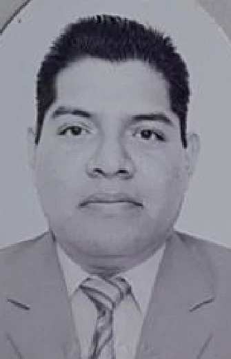
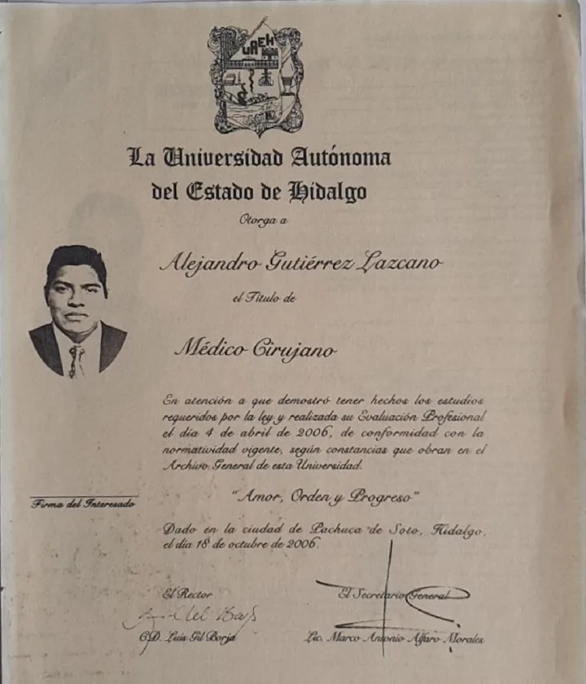
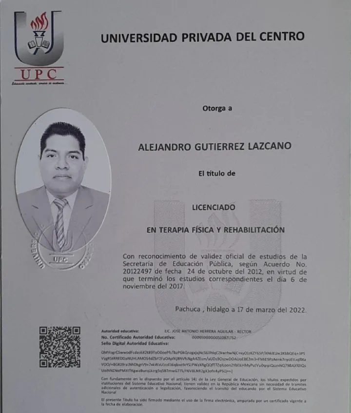
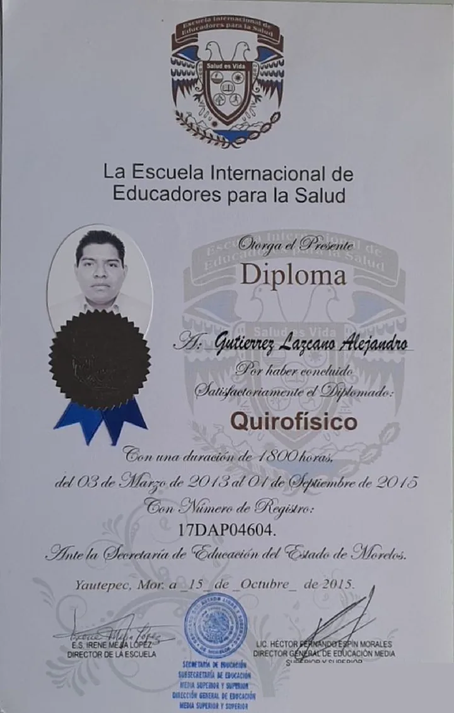
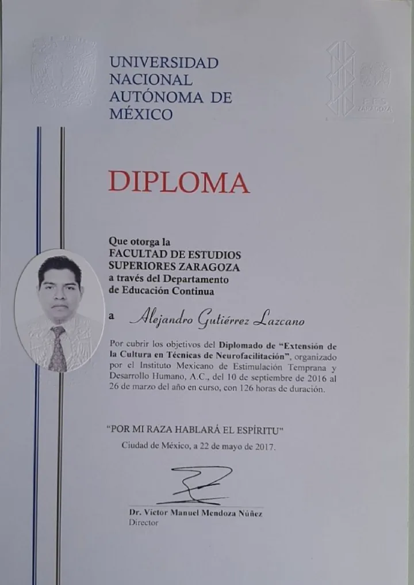
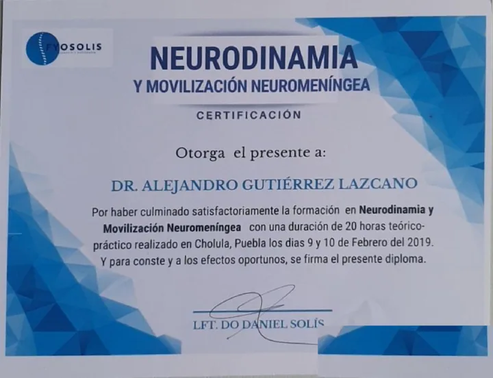
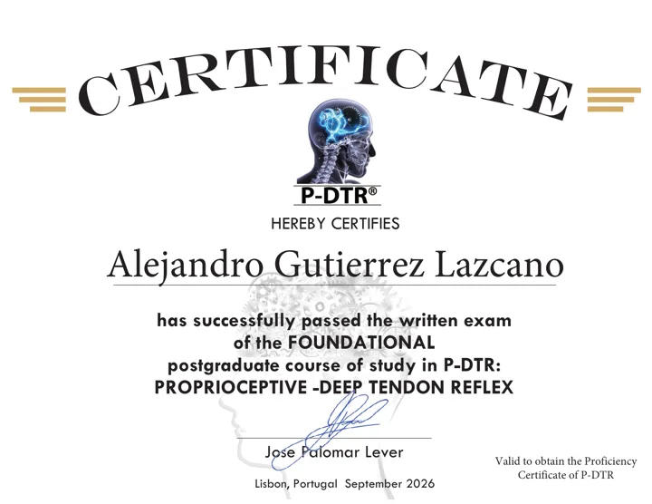
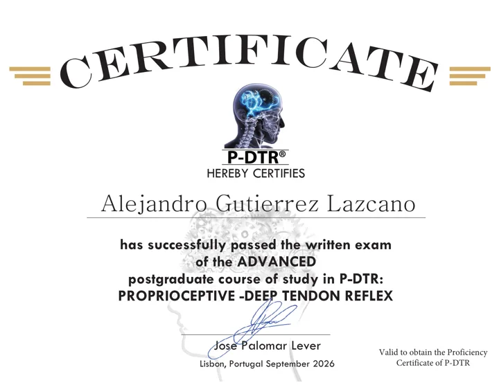

Dr. Alejandro Gutiérrez Lazcano
Médico Cirujano y Licenciado en Terapia Física y Rehabilitación, certificado en Proprioceptive Deep Tendon Reflex (P-DTR®).
Obtuvo su título de Médico Cirujano en la Universidad Autónoma del Estado de Hidalgo (UAEH) en 2006. Para complementar la medicina con el trabajo manual y funcional, cursó el Diplomado de Quirofísico (1,800 horas) en la Escuela Internacional de Educadores para la Salud y la Licenciatura en Terapia Física y Rehabilitación en la Universidad Privada del Centro, con título autenticado por la SEP.
Su formación neurológica incluye el Diplomado en Técnicas de Neurofacilitación de la UNAM (FES Zaragoza), la certificación en Neurodinamia y Movilización Neuromeníngea, y los niveles Foundational y Advanced de Proprioceptive Deep Tendon Reflex (P-DTR®). Hoy aplica esta suma de conocimientos en CEMSI para ofrecer diagnósticos de precisión y tratamientos no invasivos.
Filosofía de Intervención
El cuerpo humano no es una máquina de partes aisladas, es una red compleja neurológica y estructural. Tratar un tendón inflamado sin corregir la señal neurológica que causó la tensión es, médicamente hablando, un parche temporal. Nuestra filosofía es resolver el problema de raíz.
Tratamiento Causal
No tratamos síntomas. Evaluamos las cadenas musculares y el sistema propioceptivo para encontrar el receptor exacto que está enviando información de alarma al cerebro.
Cero Medicación Innecesaria
Los analgésicos bloquean la señal de dolor de forma química. Con P-DTR, reseteamos el mecanismo neurológico que genera esa señal, haciendo los fármacos obsoletos en muchos casos crónicos.
Alto Rendimiento Deportivo
Aplicamos la neurodinamia no solo para quitar el dolor, sino para maximizar la fuerza y la velocidad de contracción muscular en atletas de élite.
Trayectoria Académica
Formación verificable, en orden cronológico. Cada etapa está respaldada por un documento oficial que puedes consultar abajo.
-
2006
Médico Cirujano
Universidad Autónoma del Estado de Hidalgo (UAEH). Evaluación profesional el 4 de abril de 2006; título expedido en Pachuca de Soto, Hidalgo, el 18 de octubre de 2006.
-
2013 — 2015
Diplomado de Quirofísico · 1,800 horas
Escuela Internacional de Educadores para la Salud, con registro 17DAP04604 ante la Secretaría de Educación del Estado de Morelos. Del 3 de marzo de 2013 al 1 de septiembre de 2015.
-
2016 — 2017
Diplomado en Técnicas de Neurofacilitación · 126 horas
UNAM, Facultad de Estudios Superiores Zaragoza (Educación Continua), organizado por el Instituto Mexicano de Estimulación Temprana y Desarrollo Humano, A.C. Del 10 de septiembre de 2016 al 26 de marzo de 2017.
-
2017 · Título 2022
Licenciado en Terapia Física y Rehabilitación
Universidad Privada del Centro (RVOE SEP 20122497). Estudios concluidos el 6 de noviembre de 2017; título electrónico expedido en Pachuca, Hidalgo, el 17 de marzo de 2022 y autenticado por la SEP (DGAIR).
-
2019
Neurodinamia y Movilización Neuromeníngea · 20 horas
Certificación teórico-práctica por FYOSOLIS, impartida por LFT. DO Daniel Solís. Cholula, Puebla, 9 y 10 de febrero de 2019.
-
P-DTR®
Proprioceptive Deep Tendon Reflex · Foundational y Advanced
Examen escrito aprobado en los cursos de posgrado Foundational y Advanced de P-DTR®, firmados por José Palomar Lever.
Documentos Oficiales
Haz clic en cualquier documento para ver el original escaneado en alta resolución.

Título profesionalMédico Cirujano
Universidad Autónoma del Estado de Hidalgo (UAEH).

Título profesional · SEPLic. en Terapia Física y Rehabilitación
Universidad Privada del Centro. Título electrónico autenticado por la SEP (DGAIR).

DiplomadoQuirofísico
Escuela Internacional de Educadores para la Salud.

Diplomado · UNAMTécnicas de Neurofacilitación
UNAM, FES Zaragoza (Educación Continua) con el Instituto Mexicano de Estimulación Temprana y Desarrollo Humano, A.C.

CertificaciónNeurodinamia y Movilización Neuromeníngea
FYOSOLIS · LFT. DO Daniel Solís.

P-DTR®P-DTR® Foundational
Examen escrito aprobado del curso de posgrado Foundational en P-DTR.

P-DTR®P-DTR® Advanced
Examen escrito aprobado del curso de posgrado Advanced en P-DTR.